FloatingIsland.net
Floating Island information
Initial upload June 2011. Time and events will add more. Your related information is welcome.
This website offers information and links to various floating island designs.
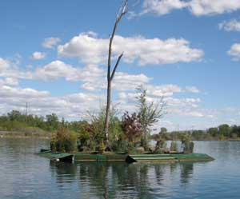
Doug Buchanan
1957 Weston Drive
Fairbanks, Alaska 99709
907 479 2149
Doug at DougBuchanan.com
Photo of Betty's Island
Among all the floating islands, the No Name Yet design is THE floating island concept, if you agree.
Consider that you are boating by a bay along an ocean coast or lake shore, and you notice an cute little forested island you had not noticed before. If you look close, you will notice a cute house on it. A couple months later, on another boating trip, the island is not there. But a few bays up the coast, there it is.
The forested island would be constructed on a floating platform, one of several available designs. It will primarily float soil for vegetation, with a lesser-noticed house among the trees, shrubs, flowers, garden, grass, a few chickens, and a couple puffins standing on a rock. It will be motorized. It is still only on paper, but progressing.
Is that not THE floating island concept, on which you want to live?
The official, not subject to dispute, FloatingIsland.net definition of a human-made floating island....
This definition was conjured-up after extensive homdihooming, some arguments, a little arm waving, fist pounding, and made credible by a bottle of superlative Cabernet Sauvignon, '98. The Official Definition Commission consisted of a floating island designer, a floating island builder, a floating island internet surfer and a floating island website slave (they each being the same person, to minimize the arguments). The official definition distinguishes genuine floating islands from house boats, land fill islands, barges, work platforms, rafts, food dishes and computer graphic cyber space illusions.
1. A floating island must be an island, in water.
2. A floating island must be floating, on water. Don't laugh. Consider what an internet search offers as floating islands.
3. A floating island must exhibit the visual and physical qualities of a real island, therein it must have a significant area of continuous soil or organic mass supporting vegetation. Potted plants or containerized soil are the accouterments of house boats, not floating islands. Anyone caught cheating will be ridiculed out of their claims. OR, and, a floating island may consist of all or areas of rocks, which officially may be those artificial hollow fiberglass rocks because they look so real, and weigh less. Concurrently, a floating island must have a "shore" of rocks or vegetation that looks like a real island shore, on most of three sides facing the camera. Too much side that looks like a barge or dock may subject the structure to the definition and accusation of a barge, dock or work platform. So you gotta foo-foo-up the sides to look like a shore. Or otherwise, it must be so impressive, floating, and not look like a boat, or barge, that the rational person will admit that it is a floating island.
The definition was adopted unanimously, and not subject to tinkering or interpretation, except by the commission.
Any disputes must be settled in favor of the person standing on the floating island. He or she will know what they are standing on, in keeping with the universal standard that he who does the work, makes the decisions.
The reason there are so few human-made floating islands in the world is that floating platforms, like any large boats or barges, are expensive. Floating heavy soil for vegetation is not logical, since there is a lot of it on land, less expensive and more convenient. House boats are expensive, and they have little room for plants, yet alone a forest or rocks.
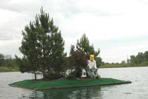
Barney's Island, with Barney.
First you need a floating platform, then you can add the dirt, trees and a house. The cost of the floating platform is a controlling concept, except for the rich who can afford a real island. Floating real estate can be almost as pricey.
The weight of the soil and house, per square foot, dictates your floating platform type and design. A two story common frame house with the people and ample good wine is generally 90 pounds per square foot. Eighteen inches of rain-soaked, mulched soil can be roughly 130 pounds per square foot, with a lot of variability and options. A Juneau Alaska record snow load at sea level can add 70 pounds per square foot. A bull sea lion that may come ashore, will be more. You will want some freeboard to be above the local ocean bay or lake waves, and accommodate temporary weights, like that bull sea lion or all the new friends you will have for parties if you live on a beautiful island.
Boats and barges can sink. You might prefer a floating platform that does not sink, commonly a foam filled platform. You will sleep better at night.
Betty's, Pebbles, and Barney's islands, back when Betty's trees were younger.
The No Name Yet island, in the design stage, is described after the below information. It may be an optimum design, or in the vicinity. Many considerations and much time arrived at this current design, which may change a bit, especially after pricing the materials again.
Floating island platform designs based on materials.....
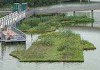 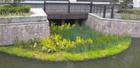 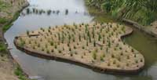
The natural "BioHaven" design, FloatingIslandInternational.com. This is your first choice for the basic knowledge of floating islands, and consideration as part or all of your floating island.
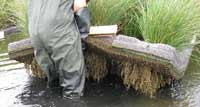
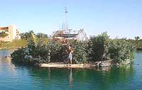
The inexpensive design, YouTube.com/watch?v=Cvn9l1pJ3-A, and, http://SpiralIslanders.com. Spiral Island, made by Richie Sowa, on the coast of Mexico. This guy made the first well known, inexpensive human-made floating island, and in good style. The concept of using recycled plastic bottles for floats is the same as using more expensive closed cell foam, with larger cells. Choose any method to hold them together, and add enough bottles for the weight you wish to float. A tropical paradise island can be had by anyone.
The most expensive design, FloatingStructures.com. Other companies also construct this type of platform. These are said to last the longest. They are constructed of Styrofoam billets encased in rebar reinforce concrete walls. The foam billets float a lot of heavy concrete that does not deteriorate very fast, with enough foam to float what you put on top. They are commonly designed for 100 pounds per square foot of surface construction, enough for a house and about 20 inches of freeboard. More weight increases the cost. They cost a bit much for floating dirt and trees, but may be the best, long term choice for the house area if one can afford them.
Barges, PoseidonBarge.com. Other companies make barges, and sell used barges. Barges rust, can sink, are expensive, and are often ugly. But every floating island person should consider them for comparative knowledge. They will hold a lot of weight, and can facilitate a nice basement for your wine cellar.
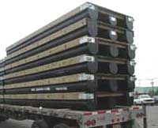 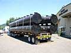 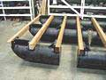 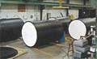
Ferguson Floats, hdpe.com/docks/Dock_Floats.shtml. These are rugged, durable, and expensive, but less expensive than concrete. Their thick walls protect the inner foam better than the thinner walled Ace floats. The end caps can be angled for a more boat-like bow. These are preferable for a motorized floating island, but a bit pricey.
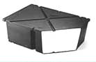
Log rafts, These have a more limited life-time, because logs get waterlogged, but they do last a significant number of years.
Other floats, There are many commercial and innovative floats available. What you find and is available can be compared against the information on this website.
BuchananLake.com floating islands, (photos above) BuchananLake.com - Click on BettyIsland-1 through -6 for the construction and maintenance photo sequence. The three islands are 10 feet by 10 feet, 17 feet by 17 feet, and 30 feet by 30 feet. This is a design for a fresh water floating island made for vegetation, with the bottom of the soil troughs in contact with the water, to facilitate self-watered forest growing. After constructing them, from the experience, Doug designed a much better, more conveniently constructed design using Ace floats. You may inquire for the details of the improved design if you are interested. This design should be compared with the above linked natural "BioHaven" floating island design, for your preference. For this size range, and larger, and utility as a visually pleasing waterfowl nesting habitat, and enjoying an occasion bottle of wine among friends on a sunny day, among other uses, the above "BioHaven" island design is more conveniently constructed and similar or less in cost. The new Ace float design that holds more soil may facilitate larger trees, sooner.
The No Name Yet design, The current design, a bit exceeding current financial wherewithal, is for a forested floating island on saltwater, with a modest house, and motorized. The core of the island platform will be two layers of 4' x 8' x 32" deep Ace floats, for the house and some surrounding soil, with that core area surrounded by a FloatingIslandInternational.com "BioHaven" vegetation area. This design is currently only on paper, actual paper, because a computer screen effort would require learning a new computer program. And the computer geeks have so extensively goobered-up every new computer program, with every gimmick nobody needs or wants, that they are making paper and pencils more rational for common projects. And excuse number 37 to avoid learning another computer program.
As with many things, the primary consideration is the expense of enough space to grow trees large enough to obscure the house and look like a forested island.
The two layers of large Ace floats facilitate 18 inches of wet mulched soil, trees, a record snow load, and enough freeboard to accommodate bay waves and that curious bull sea lion. Most of the Ace float platform will be used for the house with shop, of less weight than soil. The shop room will accommodate the propulsion motors, fuel tank, water tank, all the imperative tools of a shop guy, of course, fishing poles and such necessary stuff. The anchors and winches will be attached to the core area. Additional Ace float sections can be added later. The 18 inches of soil on the core area will facilitate larger initial trees, obscuring the house. The surrounding "BioHaven" area, which costs less, will facilitate slower growing trees, shrubs, garden area, those chickens, but not that bull sea lion. The large rock boulders will be those hollow fiberglass things. They look real. Well of course there will be an artificial rock cliff (climbing wall) forming one side of the house. The island is being designed by mountain climbers.
The frame for the Ace floats may be galvanized steel and/or wood. Wood does not last as long as galvanized steel with attached boat zinc plates. High density polyethylene Amsteel rope may be used for part of the framing design. Amsteel is pricey but does not rust. The framing design for saltwater, and bay wave action, has cycled through many variations and considered materials, and may cycle some more.
Some design drawings may be uploaded at some time, ah, as soon as the web slave gets around to it.
The various links offer good photos and related knowledge.
Questions will be entertained as time allows.
That is the full report for the moment. More later. The web slave has a particularly fine bottle of wine to analyze for the floating island wine cellar.